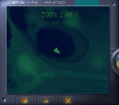
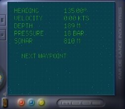
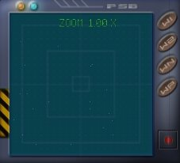

Before you start the game,
you should have a look at the configuration file "possible_config.txt"
and set all values to your preferences.
Technical Information can
be found in the file "readme.txt", which is German only.
This page explains how to
play the game and control your ship.
As a convention, keyboard
commands for corresponding actions are printed in green.
Hidden
Eastereggs are printed in Pink ;)
Contents
-
Quick Overview
-
How to play
-
Your ship
-
The Cockpit
-
The Headlight
-
The Camera
-
Combat
-
Hints
-
Cheatcodes
Quick
Overview
| Accelerate |
a |
| Decelerate |
y |
| Pitch
down |
Cursor
key up |
| Pitch
up |
Cursor
key down |
| Turn
left |
Cursor
key left |
| Turn
right |
Cursor
key right |
| Roll
left |
s |
| Roll
right |
d |
| Camera:
Still |
1 |
| Camera:
Flyby |
2 |
| Camera:
Cockpit |
3 |
| Camera:
Behindview |
4 |
| Camera:
Freecam |
5 |
| Camera:
Freecam: Rotate |
o
/ p |
| Camera:
Freecam: Zoom |
9
/ 0 |
| Camera:
Topcam |
6 |
| Camera:
Bottomcam |
7 |
| Camera:
View Target / Back to Player |
8 |
| Toggle
Left / Middle / Right display |
q
/ w / e |
| Zoom
Map |
o
/ p |
| Zoom
Radar |
k
/ l |
| Adjust
Display Transparency |
9
/ 0 |
| Target
next object |
x |
| Untarget |
c |
| Fire |
Space |
| Cycle
Weapons |
Tab |
| Toggle
Headlight |
Keypad
0 |
| Adjust
Headlight angle |
Hold
down Keypad 1 + use Cursor keys |
| Next
Waypoint |
Backspace |
| Call
Menu / Exit Menu |
Esc |
| Enable
/ Disable Wireframe mode |
F1 |
| Enable
/ Disable FPS-o-meter |
F4 |
How to play
After the Splashscreen and
the intro sequence, you'll be prompted with a demo mission running automatically
and the Main menu.
Generally, to hide
/ unhide / exit a menu, press Esc.
You might start a new game
or load one of your previously saved game here, or just watch the Credits
sequence.
Loading a game or starting
a new game takes you to the Game menu that enables you to select your next
mission or save your current progress.
Before you start into your
selected mission, you should read the mission briefing carefully as it
will explain your mission goals and the current state of your campaign.
Basically, to complete a
mission you must do the following:
-
Visit all your designated waypoints
-
Complete all mission goals
-
Survive
A mission goal, for
example might be to attack an enemy transporter - as soon as the transporter
is destroyed, this goal counts as achieved as you will notice on your middle
display (secondary mode).
Orientation:
To complete a mission, it
is advised that you stay close to your designated route. Align your ship
so that the heading of your next waypoint and your craft coincide, then
accelerate and head for the waypoint.
If you are close enough,
you should notice a white cross on your radar that represents your currently
selected waypoint. Watch the depth of the waypoint on your middle display,
you cannot determine the height difference by looking at the radar! Once
you are in the vicinty of the waypoint (about 100 meters), it is counted
as checked and your ship's computer will automatically select the next
waypoint. You can also cycle them manually
by pressing backspace.
Your
ship
Controlling your ship is
a bit sophisticated and you probably need some practice do do the maneouvers
you intend to do quickly and elegantly. The vessel can be rotated about
all three axis and travel forward or backward. Strafing movements are not
available.
| Accelerate |
a |
| Decelerate |
y |
| Pitch
down |
Cursor
key up |
| Pitch
up |
Cursor
key down |
| Turn
left |
Cursor
key left |
| Turn
right |
Cursor
key right |
| Roll
left |
s |
| Roll
right |
d |
The
cockpit
Your ship is equipped with
an efficiently designed dashboard that provides you with all the information
you require, whilst not obscuring the pilot´s vision on his surroundings.
Information is represented by 3 T-TFT displays and an artificial horizon
gauge.
All displays are laid out
with double functionality. You can switch
display capabilities with q / w / e for left,
middle and right display, respectively.
For convenience, you can
also adjust the display translucency
with 9 / 0.
Left display:
Toggle
caps with q

Primary
functionality: Map screen
An
approximate map of the surrounding seafloor territory, based on GPS and
sonar data, is displayed. The bright triangle in the middle of the screen
represents your ship. You can zoom
the map in or out with o / p.
Secondary
functionality: Target information
If
your targeting system is currently locked on a target object, the following
information about your target is displayed:
Name
Hull
Strength
Velocity
Heading,
relative to your position
Distance
Middle display:
Toggle
caps with w

Primary
functionality: Ship info
Provides
information about your ship:
Heading
Velocity
Depth
Atmospheric
Pressure
Distance
to ground (sonar)
Also provides information
about the recommended route that is stored in your ship´s computer.
It is represented by waypoints that are laid out across the map. If you
reach a Waypoint, the computer automatically selects the next one. If you
want to cycle the waypoints
manually, press Backspace repeatedly.
Next
Waypoint
Distance
to next waypoint
Depth
of next waypoint
Secondary
functionality
Display
Mission Objectives
Right display:
Toggle
caps with e

Primary
functionality
Radar.
Displays objects in your vicinty as colored strips. The color dpeends on
the mass of the object, so you can distinguish classes of ships by their
radar color.
An
upwards strip marks the object is below you, a downward strip represents
an object above you.
You
can zoom the
radar extents with k / l.
Your
currently selected target will be marked by a light blue bounding box.
Secondary
functionality
Onboard
systems information. Lists
Hull
Strength
Weapon
status for all hardpoints
Easteregg
You can also play PONG against
your ship's computer if you're bored with underwater cruising ;)
To start pong, enter primary
display mode and press Esc, then select PONG !
Artificial horizon:

Eases
instrumental navigation if no floor or sealevel is visible. If the gauge
turns completely blue, it means you are diving straight down. You´ll
quickly get the hang of it.
The
Headlight
Your ship is equipped with
a bankable headlight beam. This might come handy at large depths to brighten
up your surroundings a bit.
To switch
your headlight on / off, press 0
on the keypad.
To alter
the beam angle, hold
down Keypad 1 and use the cursor keys.
Easteregg:
For additional fun, you
can alter your headlight's color by holding down Keypad
0 and pressing
7
/ 4 (red factor)
8
/ 5 (green factor)
6
/ 9 (blue factor)
The
camera
You can watch the action
from many different perspectives. The default Camera position is right
in the cockpit of your craft, which is the only perspective that offers
the dashboard with its gauges. If playing seriously, you´ll spend
most of your time here.
You can switch to other perspectives
with keys 1-7 on the main keyboard cluster as follows
| Stillcam
(fix Cam at its current position) |
1 |
| Flyby-cam |
2 |
| Cockpit-cam |
3
(default) |
| Behind-cam |
4 |
| Freecam
(adjustable) |
5 |
| Freecam:
zoom in/out |
9
/ 0 |
| Freecam:
rotate view |
o
/ p |
| Top-cam |
6 |
| Bottom-cam |
7 |
Additionally, you can also
view the currently selected target craft (see Combat) from any of the above
perspectives except the Cockpit view. To switch
the Camera position to your current target,
press
8, then select any Camera mode you wish.
To get back
to your own ship, press 8 again. Note
that this is never done automatically, even if your selected target is
destroyed.
Combat
All ships are equipped with
a number of weapon hardpoints that can be fitted with different armory.
To fire
a weapon, press Space
To cycle
through your available weapons, press Tab
You are encouraged to use
your targeting system to gather information about your enemies.
Press x
repeatedly to target all possible objects
you might want to shoot. Note your left display will switch to Target info
mode automatically.
Press c
to untarget your current target. This will
also put your left display into map mode.
Your current target will
be surrounded by a red box.
Hints
Head-to-head encounters with
enemies are a very bad combating technique as you will most likely take
a lot of hits. A good technique would be to approach an enemy from the
side, the stick close to his rear when he tries to get away.
Targeting selects the closest
object first, then continues to cycle through the objects at increasing
distance. If you have a nasty enemy right in your face and seem to be unable
to target it quickly, hit c to untarget, then x, which will begin with
the closest target again.
Make use of your missiles
- that's what they are for
Cheatcodes
There are a number of cheatcodes
in Possible Worlds to make life for the developers easier. The codes are
still in the game, but using such a code once in a mission means you cannot
successfully complete this mission.
To activate / deactivate
the codes hold down the following keys while playing:
G
+ O + D: God
mode
N
+ R + G: full
energy
F
+ I + N: completes
the mission
t
+ r + g: allows
you to target ALL objects of the current mission, not only nearby ones